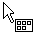

Das Layoutseitenfenster verwenden
ExpGraph-Layout-Window
Das Seitenlayoutfenster dient als eine Art “Anzeigebedienfeld” für Worksheets und Diagramme, die in separaten Unterfenstern erzeugt und bearbeitet werden. Sie können auch Diagrammobjekte zum Layoutfenster hinzufügen. Ordnen Sie die Bilder und Objekte im Seitenlayoutfenster an, um eine benutzerdefinierte Präsentation zum Ausdruck in Origin zu erstellen oder sie zur Zwischenablage oder in eine Grafikdatei zu exportieren.

- Wählen Sie Datei: Neu: Layout, um ein leeres Layoutfenster zu erstellen.
oder
- Klicken Sie auf die Schaltfläche Neues Layout
 auf der Standardsymbolleiste.
auf der Standardsymbolleiste.
Hinweis: Layoutfenster werden mit Layout1, Layout2 etc. bezeichnet.
Ein Diagramm oder ein Arbeitsblattbild zum Layoutseitenfenster hinzufügen
Um eine Grafik oder ein Arbeitsblatt zum Layoutseitenfenster hinzuzufügen:
- Wählen Sie im Menü Einfügen: Diagramm oder Einfügen: Arbeitsblatt, wenn die Layoutseite aktiv ist (oder klicken Sie mit der rechten Maustaste auf den weißen Bereich im Layoutfenster, um Diagramm hinzufügen oder Arbeitsblatt hinzufügen im Kontextmenü auszuwählen). All diese Aktionen öffnen den Dialog Diagrammbrowser oder Blattbrowser.
- Wählen Sie das Diagramm oder das Worksheet, das im Listenfeld bereitgestellt wird.
- Klicken Sie auf OK.
- Klicken Sie einmal in das Layoutfenster, um ein Bild in der voreingestellten Größe zu erzeugen.
- oder
- Ziehen Sie im Seitenlayoutfenster einen Rahmen auf, um ein Bild in der angegebenen Größe zu erzeugen (die Größe des Rechtecks, das Sie mit Ihrer Maus aufziehen). Mit Freigabe der Maustaste wird ein Bild (Objekt) der zugehörigen Grafik oder des Arbeitsblatts angezeigt.
Wenn das Quellfenster ein Arbeitsblattfenster ist, werden das Arbeitsblattgitter und die Zellenwerte als Bild im Layoutseitenfenster angezeigt. Textbeschriftungen im Arbeitsblattfenster werden im Layoutfenster nicht angezeigt.
Wenn das Quellfenster ein Diagrammfenster ist, werden alle Diagramme innerhalb der Diagrammseite im Layoutfenster angezeigt. Textbeschriftungen und andere Objekte werden im Layoutseitenfenster angezeigt, wenn mindestens ein Teil des Objekts innerhalb der Grafikfensterseite liegt (Der graue Bereich im Grafikfenster liegt außerhalb der Seite).
 |
Wenn Sie das Layoutfenster verwenden, um farbkodierte Diagramme (z. B. Kontur- oder Oberflächendiagramme) zu verbinden und anzuordnen, die eine gemeinsame Farbskala verwenden, beachten Sie, dass Sie seit Origin 2019 eine unabhängige Farbskala zum Layoutfenster hinzufügen können. Weitere Informationen finden Sie unter Eine unabhängige Farbskala hinzufügen.
|
Bilder auswählen
- Um ein Bild im Layoutseitenfenster auszuwählen:
- Klicken Sie auf das Bild.
oder
- Alternativ können Sie mit der Maus einen Rahmen um das Bild ziehen (wenn das Hilfsmittel Zeiger ausgewählt wurde).
- Lassen Sie die Maustaste los, und eine markierte Begrenzungslinie mit Angriffspunkten wird um das Bild herum eingeblendet.
Um diese Auswahl aufzuheben, klicken Sie irgendwo im Seitenlayoutfenster (außerhalb des Bildes).
- Um mehr als ein Bild auszuwählen:
Um mehr als ein Bild im Seitenlayoutfenster auszuwählen:
- UMSCHALT+Klick auf die Bilder.
oder
- Ziehen Sie eine Markierung um mehrere Bilder mit Hilfe des Hilfsmittels Zeiger.
Bildgröße anpassen
- Um die Größe des Bildes im Layoutseitenfenster zu verändern:
- Klicken Sie auf das Bild, um die Rahmenmarkierung einschließlich der Auswahlelemente anzuzeigen.
- Ziehen Sie an den Elementen, um die Größe des Bildes anzupassen.
- Nutzen Sie die horizontalen oder vertikalen Auswahlelemente, um die entsprechenden Abmessungen zu verändern. Verwenden Sie die Auswahlelemente an den Ecken, um die Größe proportional zu verändern (das Seitenverhältnis beizubehalten).
- Klicken Sie außerhalb des Bildes (aber innerhalb des Seitenlayoutfensters), um die Auswahl des Bildes aufzuheben. Beachten Sie, dass der Zugriff auf die Größenanpassung und Positionierung des Objektes durch die Einstellungen im Dialog Objekteigenschaften blockiert sein kann. (Um den Dialog Objekteigenschaften zu öffnen, machen Sie auf das Objekt im Layoutfenster einen Doppelklick. Die Registerkarte Einstellungen steuert den Bearbeitungszugang zum Objekt.)
Hinweise zur Größenanpassung von Bildern
- Um sicherzugehen, dass die Proportionen des Bildes nicht bei künftigen Größenanpassungen verändert werden, lassen Sie Seitenverhältnis beibehalten im Kontextmenü aktiviert oder aktivieren Sie das Kontrollkästchen Seitenverhältnis beibehalten auf der Registerkarte Abmessungen des Dialogs Objekteigenschaften (um diesen Dialog zu öffnen, klicken Sie doppelt auf die Darstellung der Layoutseite).
- Um das Seitenverhältnis während der Größenanpassung beizubehalten, können Sie alternativ auch die STRG-Taste gedrückt halten, während Sie am Auswahlelement ziehen. Ziehen Sie das Einstellelement auf die gewünschte Position. Lassen Sie die STRG-Taste und die Maustaste los, um das in seiner Größe veränderte Bild anzuzeigen.
- Die Verringerung oder Erweiterung der Abmessungen eines Worksheet-Bildes im Layoutseitenfenster steuert die Anzeige der Zeilen- und Spaltenanzahl im Bild.
Größe beim Einfügen von Objekten zwischen Layouts beibehalten
Wenn sie zum Layoutfenster hinzugefügt wurden, haben diese Objekte Einheiten, die folgendermaßen ausgedrückt werden: % des Layers (Objekteigenschaften > Registerkarte Dimensionen):
- Bestimmte Bildobjekte (EMF, BMP, DIB, OIMAGE und SVG) werden ins Layoutfenster eingefügt.
- Diagramme (GPage) und Arbeitsblätter (WBook) werden über das Kontextmenü der Layoutseite hinzugefügt.
Daher wird die Größe und das Seitenverhältnis der kopierten Objekte beim Einfügen von Objekten zwischen Layouts der gleichen Seitendimensionen beibehalten. Dies bedeutet jedoch auch, dass Objekte beim Einfügen zwischen Layouts mit unterschiedlichen Dimensionen verzerrt oder in der Größe verändert wirken können.
Um die absolute Größe des ursprünglichen kopierten Bild-, Diagramm- oder Arbeitsblattobjekts beim Kopieren und Einfügen zwischen Layouts verschiedener Größen beizubehalten, drücken Sie die ALT-Taste, bevor Sie Einfügen im Ziellayoutfenster wählen.

Bilder verschieben und ausrichten
- Um das Bild im Layoutseitenfenster zu verschieben:
- Klicken Sie das Bild an und ziehen Sie es mit der Maus auf die neue Position.
- Klicken Sie außerhalb des Bildes (aber innerhalb des Seitenlayoutfensters), um die Auswahl zu deaktivieren
Sie können das Bild auch positionieren und in seiner Größe anpassen, indem Sie die Bedienelemente der Registerkarte Abmessungen im Dialogfeld Objekteigenschaften verwenden:
- Führen Sie einen Doppelklick auf das Bild aus, um den Dialog Objekteigenschaften zu öffnen.
- Wählen Sie die Registerkarte Abmessungen.
- Bearbeiten Sie die Einstellungen in der Auswahlliste Einheiten und im Textfeld Größe.
- Um Objekte (Text, Bilder etc.) mit Hilfe des Layoutgitternetzes auszurichten:
- Wählen Sie bei aktiver Layoutseite Ansicht: Gitternetz zeigen oder klicken Sie auf den oberen Bereich des Fensters und, wenn die Aufforderung der Minisymbolleiste  angezeigt wird, klicken Sie erneut und dann auf die Schaltfläche Gitternetz zeigen.
- Um die Objekte am Gitternetz auszurichten, wählen Sie Format: An Gitternetz ausrichten oder aktivieren Sie die Option An Gitternetz ausrichten im Menü der Minisymbolleiste Gitternetz zeigen.
|
Die Farbe des Layoutgitternetzes kann mit Hilfe der Funktion color() und der Systemvariablen @GCL modifiziert werden. Öffnen Sie das Skriptfenster (Fenster: Skriptfenster), geben Sie Folgendes ein und drücken Sie Enter (Ihre RGB-Werte werden mit denjenigen im Skript ersetzt).
@GCL=color(R, G, B, 1)
Wenn das Gitternetz bereits angezeigt wird, drücken Sie F5, um die Änderung zu sehen.
|
- Bilder mit der Symbolleiste Objekt bearbeiten ausrichten:
Verwenden Sie die Symbolleiste Objekt bearbeiten (Ansicht: Symbolleisten), um Bilder (oder jedes beliebige Objekt) im Layoutfenster auszurichten. Die Schaltflächen der Symbolleiste Schaltflächen bearbeiten stellen die Anordnung jedes(r) aktiven Objekts(e) im Fenster ein.
-
- Um ein Objekt zu aktivieren, klicken Sie einmal auf das Bild.
- Um mehr als ein Bild zu aktivieren, halten Sie die Umschalttaste gedrückt und klicken Sie auf die gewünschten Bilder oder zeichnen Sie eine Markierung um mehrere Bilder, um alle auszuwählen.
- Bilder mit dem Dialog Objekteigenschaften ausrichten:
- Führen Sie einen Doppelklick auf das Bild aus, um den Dialog Objekteigenschaften zu öffnen.
- Wählen Sie die Registerkarte Dimensionen und bearbeiten Sie die Werte Links oder Oben in der Gruppe Position. Wollen Sie mehrere Objekte präzise horizontal oder vertikal anordnen, bearbeiten Sie diese Felder manuell.
Bilder bearbeiten
Um die Darstellung eines Bildes im Layout-Fenster zu verändern, bearbeiten Sie das Quelldiagramm oder das Arbeitsblatt im untergeordneten Fenster.
- Das Quelldiagramm oder Arbeitsblattfenster bearbeiten:
- Klicken Sie mit der rechten Maustaste auf das Bild in der Layoutseite.
- Wählen Sie Gehe zu Fenster im Kontextmenü.
Klicken Sie auf das Layoutseitenfenster, um die Änderungen anzusehen, die Sie für die Darstellung des Diagramms oder Arbeitsblatts vorgenommen haben. Sollte sich das Layoutseitenfenster nicht aktualisiert haben, wählen Sie Fenster: Aktualisieren oder klicken Sie auf die Schaltfläche Aktualisieren  in der Symbolleiste Standard.
in der Symbolleiste Standard.
Einen Hintergrund zu einem Bild hinzufügen
Wie für andere Objekte auch kann für eine Grafik im Layoutfenster ein Hintergrund eingestellt werden.
- Um einem Bild eine Hintergrunddarstellung hinzuzufügen:
- Führen Sie einen Doppelklick auf das Bild aus, um den Dialog Objekteigenschaften zu öffnen.
- Wählen Sie die Registerkarte Bild aus.
- Aktivieren Sie das Kontrollkästchen Hintergrund und wählen Sie einen Hintergrund aus der Auswahlliste.
|
Hinweis: Sie können diesen Hintergrund individuell oder auf jedes Objekt im Fenster anwenden. Allerdings kann sie nur noch individuell von den Objekten entfernt werden, sobald die Hintergrundanzeige einmal auf jedes Objekt im Fenster angewandt wurde.
|
Kontextmenü Format kopieren/einfügen für Diagrammobjekt in Layoutfenster
Sie können das Format eines Diagrammobjekts kopieren und es in ein anderen Diagrammobjekt einfügen. Zum Beispiel:
- Öffnen Sie eine Layoutseite und fügen Sie auf der Layoutseite zwei Textobjekte, "test1" und "text2", hinzu.
- Klicken Sie mit der rechten Maustaste auf das Textobjekt "test1" und wählen Sie Eigenschaften, um den Dialog Objekteigenschaften zu öffnen.
- Wählen Sie die Option Schattierung in der Auswahlliste Hintergrund. Klicken Sie auf OK, um den Dialog zu schließen.
- Klicken Sie mit der rechten Maustaste auf das Objekt "test1", um Format kopieren: Hintergrund im Kontextmenü auszuwählen.
- Klicken Sie mit der rechten Maustaste auf das Objekt "test2", um Format einfügen im Kontextmenü auszuwählen. Das Hintergrundformat des Objekts "test1" wird auf das Objekt "test2"angewendet.
Erhöhung der Aktualisierungsgeschwindigkeit im Layoutseitenfenster
Sie können die Aktualisierungsgeschwindigkeit des Layoutseitenfensters auf zwei Arten erhöhen.
- Klicken Sie das gewünschte Bild zur Auswahl an.
- Wählen Sie Layout: Platzhalter verwenden.
Ist ein Platzhalter für das ausgewählte Bild angezeigt, so erscheint unmittelbar neben diesem Menübefehl ein Aktivierungszeichen.
Um die Anzeige des Platzhalters zu deaktivieren:
- Klicken Sie den Platzhalter zur Auswahl an.
- Wählen Sie Layout: Platzhalter entfernen an.
- oder
- Deaktivieren Sie das Kontrollkästchen Platzhalter verwenden auf der Registerkarte Bild im Dialog Objekteigenschaften oder klicken Sie mit der rechten Maustaste auf das Objekt und wählen Platzhalter entfernen aus.
Der Platzhalter für ein Bild kann nach derselben Vorgehensweise wie für Bilder selbst bewegt und in seiner Größe verändert werden. Führen Sie einen Doppelklick auf das Bild aus, um das Dialogfeld Objekteigenschaften zu öffnen. Wenn Sie die Platzhalteranzeige für Bilder abschalten, können Sie die Veränderungen sehen, die in der Auswahlliste Hintergrund vorgenommen wurden.
|
Hinweis: Bilder werden unabhängig von der Platzhalteranzeige für Bilder ausgedruckt.
|
- Die Bilder im schnellen Seitenansichtsmodus anzeigen:
Sie können sich für die Anzeige aller Bilder (und zusätzlichen Objekte - Text, Zeichnungen usw.) im Layoutfenster im Modus Seitenansicht entscheiden, unabhängig vom Bildansichtsmodus des Unterfensters. Der Seitenansichtmodus bietet einen schnelleren Bildschirmaufbau als die Druckansicht. Um Bilder (und Objekte) im Seitenlayoutfenster im Modus Seitenansicht anzuzeigen:
- Wählen Sie Layout: Kontrolle der Anzeige.
oder
- Klicken Sie mit der rechten Maustaste in das Layoutfenster (jedoch außerhalb der Seite) und wählen Sie im Kontextmenü Kontrolle der Anzeige aus. Dieser Menübefehl ist aktiviert, wenn Bilder im Modus der Seitenansicht angezeigt werden. Um diesen Befehl zu deaktivieren, wählen Sie Kontrolle der Anzeige erneut aus.
Da der Seitenansichtmodus den Bildschirmtreiber für die Anzeige nutzt (die Druckansicht verwendet hierfür den Druckertreiber), kann die Platzierung eines Textes auf der Layoutseite bei angewähltem Befehl Kontrolle der Anzeige ungenau sein. Dies dürfte kein allzu großes Problem darstellen, da die Bearbeitung eigentlich im zugehörigen Unterfenster vorgenommen wird. Überprüfen Sie in einem Unterfenster die Textpositionen mit der Wahl Ansicht:Druck-Ansicht, wenn es aktiv ist. Bilder im Seitenlayoutfenster werden so ausgedruckt, wie sie im Modus Druckansicht des Unterfensters angezeigt werden.
Änderungen am Arbeitsblattobjekt im Layout- oder Diagrammfenster aktualisieren
Wenn die Spaltenbreite/Zeilenhöhe, Schriftfarbe, Füllfarbe etc. im Quellarbeitsblatt geändert werden, können Sie mit der rechten Maustaste auf das Arbeitsblattobjekt im Layout- oder Diagrammfenster klicken und die Option Aktualisieren im Kontextmenü auswählen.
Sie können das Layout- oder Diagrammfenster auch aktualisieren, indem Sie auf die Schaltfläche Aktualisieren im Dialog Objekteigenschaften auf der Registerkarte Programmierung klicken.
Größe der Layoutseite an alle Objekte anpassen
Um die Größe der Layoutseite zu erweitern, damit alle eingefügten Objekte erfasst sind, können Sie:
- Wählen Sie bei einem aktivierten Layoutfenster Format: Seite an alle Objekte anpassen, um den Dialog Seite an Layer anpassen zu öffnen.
- Legen Sie den Rand für die Layoutseite fest.
- Klicken Sie auf die Schaltfläche OK, um die Seitengröße und den Rand anzuwenden.